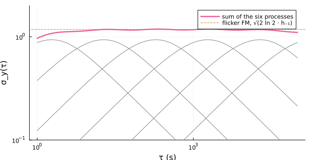

The clock model
The Kalman filter, the Kalman time scales, the Kalman predictor of the holdover test and the steering loop describe a clock by a few states driven by white noise. This page gives the model, the relation of its levels to the coefficients $h_α$ of Power-law noise, the two ways in which flicker noise enters it, and what each of them costs in simulation. ClockModel holds a model and clock_model builds one from a noise fit.
The states
With phase $x$, frequency $y$ and frequency drift $d$, the model is that of Zucca and Tavella (2015), Eq. (1) without its deterministic terms:
\[dx = y\,dt + \sqrt{q_1}\,dW_1, \qquad dy = d\,dt + \sqrt{q_2}\,dW_2, \qquad dd = \sqrt{q_3}\,dW_3 .\]
The $W_i$ are independent Wiener processes: white noise of two-sided spectral density $q_1$ drives the phase, $q_2$ the frequency and $q_3$ the drift. A model without a drift state leaves out $d$ and $W_3$. The clock is read every $τ_0$ seconds, and a reading is the phase plus white noise of variance $R$:
\[z_k = x(kτ_0) + v_k .\]
Noise levels
Each driving noise gives one power law of the one-sided spectrum $S_y(f) = \sum_α h_α f^α$. White noise of two-sided density $q$ has the one-sided density $2q$, and each integration divides the spectrum by $(2πf)^2$. White PM of variance $R$ per sample is flat in $S_x$ up to the Nyquist frequency $1/(2τ_0)$, at the level $2τ_0 R$.
| Noise | $α$ | $S_y(f)$ | Level | Allan variance |
|---|---|---|---|---|
| white PM | 2 | $8π^2 τ_0 R\,f^2$ | $R = h_2/(8π^2 τ_0)$ | $3R/τ^2$ |
| white FM | 0 | $2q_1$ | $q_1 = h_0/2$ | $q_1/τ$ |
| random-walk FM | −2 | $2q_2/(2πf)^2$ | $q_2 = 2π^2 h_{-2}$ | $q_2 τ/3$ |
| random-run FM | −4 | $2q_3/(2πf)^4$ | $q_3 = 8π^4 h_{-4}$ | does not converge |
The Hadamard variance converges for all three FM terms, to $q_1/τ + q_2 τ/6 + 11 q_3 τ^3/120$ (Greenhall (2003), Eq. (6)). The process noise of Koppang and Leland (1999), §II has the same $h_0/2$ and $2π^2 h_{-2}$.
using SigmaTau
m = ClockModel(; tau0 = 1.0, R = 1e-22, q1 = 1e-24, q2 = 1e-30)
τ = [1.0, 100.0, 1e4]
closed = sqrt.(3m.R ./ τ .^ 2 .+ m.q1 ./ τ .+ m.q2 .* τ ./ 3)
# the Allan deviation of the model, and the closed form
round.([powerlaw_sigma(m, τ) closed]; sigdigits = 4)3×2 Matrix{Float64}:
1.735e-11 1.735e-11
2.001e-13 2.001e-13
5.862e-14 5.862e-14The flicker noises, $α$ = 1, −1 and −3, have spectra that no finite set of such states produces. clock_model treats them in one of two ways. By default flicker FM and flicker PM are kept as Markov states (Flicker states). With flicker = false, flicker FM is left out of the model and flicker PM is counted as white noise of the readings (Flicker PM in the readings), which leaves the two or three states above. Flicker-walk FM is left out either way.
powerlaw_fit fits flicker FM by default, and clock_model(fit; flicker = false) leaves it out, so the model has less noise than the fit found. On a clock with a flicker floor its filter claims several times less error than it makes (What the states buy). The :stein time scale of timescale is the one place that needs a model without the states.
Over one step
Over a step of $δ$ seconds the state $X = (x, y, d)$ moves to $Φ(δ) X + w$, with
\[Φ(δ) = \begin{pmatrix} 1 & δ & δ^2/2 \\ 0 & 1 & δ \\ 0 & 0 & 1 \end{pmatrix}\]
and $w$ the driving noises gathered over the step, of covariance (Greenhall (2003), Eq. (5); Zucca and Tavella (2015), Eq. (3))
\[Q(δ) = \begin{pmatrix} q_1 δ + q_2 δ^3/3 + q_3 δ^5/20 & q_2 δ^2/2 + q_3 δ^4/8 & q_3 δ^3/6 \\ q_2 δ^2/2 + q_3 δ^4/8 & q_2 δ + q_3 δ^3/3 & q_3 δ^2/2 \\ q_3 δ^3/6 & q_3 δ^2/2 & q_3 δ \end{pmatrix} .\]
state_transition and process_noise return the two for any step. Because the driving noises are white, two steps compose into one, $Q(a + b) = Φ(b)\,Q(a)\,Φ(b)^\mathsf{T} + Q(b)$. A filter that predicts across a gap sample by sample therefore lands where one step of the length of the gap would, and an estimate can be carried any time ahead in one step, as holdover_error does.
Φ, Q = state_transition(m, 5.0), process_noise(m, 5.0)
process_noise(m, 10.0) ≈ Φ * Q * Φ' + QtrueThe model is in continuous time, and its Allan variance is that of the table at every $τ$. noise_gen draws the power law of a sampled record (Simulated noise) and powerlaw_sigma evaluates it. On random-walk FM the sampled record has half as much Allan variance again at $τ_0$ and the same within 1 % from $16τ_0$. On a noise_gen record of random-walk FM alone, the filter of the matching model therefore claimed 1.3 times too little one sample ahead and 1.02 times at 16 samples. On a record from simulate_clock, which draws from the model itself, the two agreed within 1 %. The difference matters only where random-walk FM leads at $τ_0$.
Flicker PM in the readings
Flicker PM is noise of the readings that is not white. A filter whose $R$ is the white PM alone takes its readings for quieter than they are. In simulation, a clock with white FM of $10^{-12}$ at 1 s was read through PM with the Allan deviation at $τ_0$ of 3.2 ps of white PM, or of 32 ps, and with half or nine tenths of that Allan variance from flicker PM. At nine tenths, the innovations of such a filter had 7.5 times the variance it expected with 3.2 ps and 20 times with 32 ps, and its phase estimate had 2.8 and 3.3 times the Allan deviation of the clock at $τ_0$.
With flicker = false, clock_model therefore folds the flicker PM into $R$. A filter averages the PM that is faster than its own response and follows the rest as if it were the clock, so $R$ stands for the part it averages, as the measurement variance of Van Dierendonck et al. (1984), Eqs. (68)–(69) is the phase noise that a tracking loop does not follow. With $σ_{\mathrm{PM}}^2(τ)$ the Allan variance of the white and flicker PM together, and $m$ the last lag at which it exceeds that of the FM terms,
\[R = \frac{(mτ_0)^2\,σ_{\mathrm{PM}}^2(mτ_0)}{3} .\]
For white PM alone this is $h_2/(8π^2 τ_0)$ at every lag. For flicker PM it grows with the logarithm of $m$: in three cases it lay 3 to 7 % above the variance of the flicker PM between $f = 1/(9mτ_0)$ and the Nyquist frequency. The paper gives the principle. The formula is this package's.
h = Dict(2 => 8π^2 * 1e-24, 1 => 2e-22, 0 => 2e-24, -2 => 1e-30 / 2π^2)
clock_model(h; tau0 = 1.0, flicker = false) # white PM alone: R = 1e-242-state ClockModel, τ₀ = 1.0 s
R 3.3e-23 s²
q1 1e-24 s
q2 1e-30 1/sNo white $R$ makes a filter right about flicker PM. Its slow part is still followed as phase of the clock, and the innovations stay correlated: across the four cases of the same simulation the normalized innovations of the folded model had 0.57 to 0.69 of the variance it expected and a lag-1 autocorrelation of 0.28 to 0.63, so innovation_check fails the folded model on such a clock. The Markov states below, the default, give the flicker PM a model of its own.
The fit has to hold the flicker PM term for either treatment to work. Fitted with white PM, white FM and random-walk FM alone, the flicker PM passes for white FM. On the same clock powerlaw_fit with alphas = [2, 0, -2] returned 2.6 and 4.3 times the true $q_1$ with 3.2 ps, at one half and nine tenths flicker, and 93 and 216 times with 32 ps. With $α = 1$ in the fit the median was within 1 % of the truth. Single records of 65 536 samples were within 10 % with 3.2 ps and ran from zero to twice the truth with 32 ps, where white FM is a small part of the curve. The fit told the two PM types apart: the flicker PM level came out within 8 % on every record.
Flicker states
A finite state cannot make a $1/f$ spectrum, but a few first-order Markov processes follow one over the span of averaging times that matters.
Flicker FM
Davis et al. (2005), Eqs. (2.1) and (2.10) model flicker FM as a sum of independent Markov frequency processes $m_j$ that add to the frequency,
\[dx = \Bigl(y + \sum_j m_j\Bigr) dt + \sqrt{q_1}\,dW_1, \qquad dm_j = -\frac{m_j}{T_j}\,dt + \sqrt{\frac{2σ^2}{T_j}}\,dW_{m_j} ,\]
each stationary with the same variance $σ^2$, and with time constants $T_j$ that rise geometrically. One process has the one-sided spectrum $4σ^2 T/(1 + (2πfT)^2)$ and the Allan variance
\[σ_y^2(τ) = σ^2\,\frac{g(τ/T)}{(τ/T)^2}, \qquad g(u) = 2u - 3 + 4e^{-u} - e^{-2u} ,\]
which peaks at $τ = 1.89\,T$ (their Eq. (2.5)). Over a step of $δ$, with $a = e^{-δ/T}$, the process decays by $a$ and moves the phase by $T(1 - a)$ times its value (Eq. (2.7)), and it adds to the process noise (Eqs. (2.8)–(2.9))
\[Q_{xx} \mathrel{+}= σ^2 T^2 g(δ/T), \qquad Q_{xm} = σ^2 T (1 - a)^2, \qquad Q_{mm} = σ^2 (1 - a^2) .\]
A ladder of such processes with time constants a factor $ρ$ apart has the spectrum $σ^2/(f \ln ρ)$ inside its span, so $S_y = h_{-1}/f$ needs
\[σ^2 = h_{-1} \ln ρ ,\]
with a ripple of $± 2/\cosh(π^2/\ln ρ)$ in the spectrum: 3.5 % at a ratio of 8, 5.5 % at 10 and 11 % at 16. With the ratio 16 and the unit variances of the paper's Figure 4, the relation gives the level of that figure, $\log_{10} σ_y = -0.15$.
using Plots
g(u) = 2u - 3 + 4exp(-u) - exp(-2u)
τs = 10 .^ range(0, 5; length = 200)
T = 10.0 .^ (0:5) # six time constants, a decade apart
each = [log(10) * g(t / Tj) / (t / Tj)^2 for t in τs, Tj in T] # h₋₁ = 1
plot(τs, sqrt.(each); xscale = :log10, yscale = :log10, color = :gray, label = "",
xlabel = "τ (s)", ylabel = "σ_y(τ)", ylims = (0.1, 2), size = (640, 330))
plot!(τs, sqrt.(sum(each; dims = 2)); lw = 2.5, label = "sum of the six processes")
hline!([sqrt(2log(2))]; ls = :dash, label = "flicker FM, √(2 ln 2 · h₋₁)")
The paper places its first process to peak at $τ_0$ and spaces the rest by 8 or 16. Here the first time constant is the lower end of the band of the states, the ratio is 10, and the level follows from $h_{-1}$ by the relation above. What the ladder lacks at $τ_0$ is added as white FM, so that the Allan variance of the model there is the $2h_{-1}$ of sampled flicker FM. A ladder from $τ_0$ then has between 0.94 and 1.03 times the Allan deviation of sampled flicker FM across its band, lowest at the upper end, where the ladder stops.
Flicker PM
The same construction one integration up gives flicker PM states. Markov phase processes $p_j$ of variance $σ^2 = h_1 \ln 10/(4π^2)$ add to each reading and not to the phase,
\[z_k = x(kτ_0) + \sum_j p_j(kτ_0) + v_k ,\]
so that flicker PM stays noise of the readings, as white PM is, but with memory. The filter estimates the $p_j$ and keeps them out of the phase. What the ladder lacks at $τ_0$ is added to $R$ as white PM. A ladder from $τ_0$ has between 0.99 and 1.03 times the Allan deviation of sampled flicker PM across its band. The paper treats flicker FM only, in a filter without measurement noise. Markov states in the readings are this package's own.
clock_model(h; tau0 = 1.0)6-state ClockModel, τ₀ = 1.0 s
R 1e-24 s²
q1 1e-24 s
q2 1e-30 1/s
flicker PM 2e-22, 4 Markov states, 1 to 1000 sWhere the states sit
The states are placed only where a flicker matters. The band of each flicker runs from the first to the last $τ$, between $τ_0$ and tau_max, at which it holds at least a quarter of the Allan variance of the model. The time constants start at the lower end and rise by decades until one reaches the upper end: $1 + ⌈\log_{10}(τ_2/τ_1)⌉$ states for a band from $τ_1$ to $τ_2$. A flicker that never holds a quarter gets no states. fm_band and pm_band place the states by hand.
| Clock | Band | States |
|---|---|---|
| maser: white FM $10^{-12}$ at 1 s, flicker floor $1.5 × 10^{-13}$, random-walk FM from $2 × 10^4$ s | 18 s to 56 000 s | 5 |
| quartz: flicker floor $10^{-12}$ from 1 s, random-walk FM from 3000 s | 1.3 s to 7500 s | 5 |
| white FM $10^{-12}$ at 1 s, flicker floor $10^{-14}$, random-walk FM from 390 s | none | 0 |
A band that starts above $τ_0$ leaves the ladder short at its lower end, where the other noises hold three quarters of the variance. The Allan deviation of seven whole models, with one or both flickers and with and without random-walk FM, stayed between 0.94 and 1.03 times that of the power law each stands for, from $τ_0$ to tau_max.
What the states buy
The figures of this section are from simulation, on records of 65 536 samples at 1 s from noise_gen.
Flicker FM. Two clocks, 16 records each, models fitted to the whole record with powerlaw_fit, and the Kalman predictor of holdover started after 8192 s. The four models are clock_model(fit) of a fit with alphas = [2, 0, -2], the same model retuned on the record by tune_q, clock_model(fit; flicker = false) of the default fit, and clock_model(fit) of the default fit. The first table gives the median RMS error of the prediction at 10, 100, 1000 and 10 000 s over that of the true levels with states.
| Model | Maser | Quartz |
|---|---|---|
| fit without a flicker FM term | 1.02, 1.10, 1.36, 1.55 | 1.06, 1.26, 1.40, 1.24 |
| the same, retuned | 1.05, 1.06, 1.09, 1.29 | 1.19, 1.07, 1.17, 1.13 |
| default fit, flicker FM left out | 1.14, 1.28, 1.21, 1.17 | 1.24, 1.27, 1.38, 1.22 |
| default fit, flicker FM kept | 1.00, 1.00, 1.00, 1.03 | 1.00, 1.00, 1.00, 1.00 |
The second gives the median RMS error over the error that the filter itself claimed.
| Model | Maser | Quartz |
|---|---|---|
| fit without a flicker FM term | 1.09, 1.06, 0.59, 0.24 | 1.09, 0.72, 0.32, 0.15 |
| the same, retuned | 1.2, 1.9, 2.0, 1.1 | 1.8, 2.8, 1.9, 0.91 |
| default fit, flicker FM left out | 1.4, 2.7, 5.4, 8.2 | 8.7, 6.9, 3.1, 1.5 |
| default fit, flicker FM kept | 1.04, 1.02, 1.02, 1.03 | 0.99, 1.01, 1.01, 0.97 |
A fit without the term spreads the flicker over white and random-walk FM. Its predictions are up to 55 % worse, and at long times it claims 4 to 7 times the error it makes. Retuning the two levels for prediction brings the long predictions closer, within 5 to 29 % of the states. Its claim is right one sample ahead, where tune_q sets the size of the levels, and 1.2 to 2.8 times too small from 10 to 1000 s. On both clocks the best pair of levels lay on the edge of the default grid in most records, which tune_q reports. Leaving a fitted flicker out removes that noise from the model, and the filter claims several times less than the error it makes. In that row the long-time figures depend on how much random-walk FM each fit found, and ran from 1 to 26 between records of the maser at 10 000 s. With the states the predictions are those of the true levels and the claim is right.
The ladder is an approximation, and a long record resolves it. innovation_check failed every model of the tables on every record, the true levels with states included: with states the lag-1 autocorrelation was 0.016 on the maser and −0.017 on the quartz, against a bound of ±0.0077. With states from $τ_0$ to the record length in place of the default band, the test passed on 14 of the 16 maser records and the predictions moved by less than 0.3 %. On the quartz, whose band already starts near $τ_0$, nothing changed.
Flicker PM. In the four cases of Flicker PM in the readings, the innovations of the model with states had 0.98 to 0.99 of the variance it claimed and a lag-1 autocorrelation of −0.009 to −0.014, where the folded model had 0.28 to 0.63. That is still outside the bound of the test, which passed on 4 of the 64 records. Against the folded model the states predicted the next reading 4 and 10 % better with 3.2 ps and 15 and 25 % better with 32 ps, 0.5 to 6 % better at 10 s and 0.3 to 2 % at 100 s. The phase estimate itself gained less: its RMS error was 2 to 8 % smaller than that of the folded model, whose own was 2 to 8 % smaller than with the white PM alone as $R$. The slow part of flicker PM cannot be told from the clock by any of the three.
In a time scale. In the :greenhall scale of three equal clocks with flicker PM on the readings of two, the states left the weights equal and changed the Allan deviation of the implicit ensemble mean by 0.2 % at most. The scale read at the clock without flicker PM was 11 to 14 % quieter at 16 to 64 s than with the fold, 16 % noisier at 1 s, and the same from 1000 s. Among unequal clocks the weights moved: flicker PM of 35 times the Allan deviation of the quietest clock at $τ_0$ on its readings took its weight from 0.76 to 0.75 with the fold and to 0.69 with states.
The levels are only as good as the fit. At the longest $τ$ of a short record, flicker FM and random-walk FM are hard to tell apart.